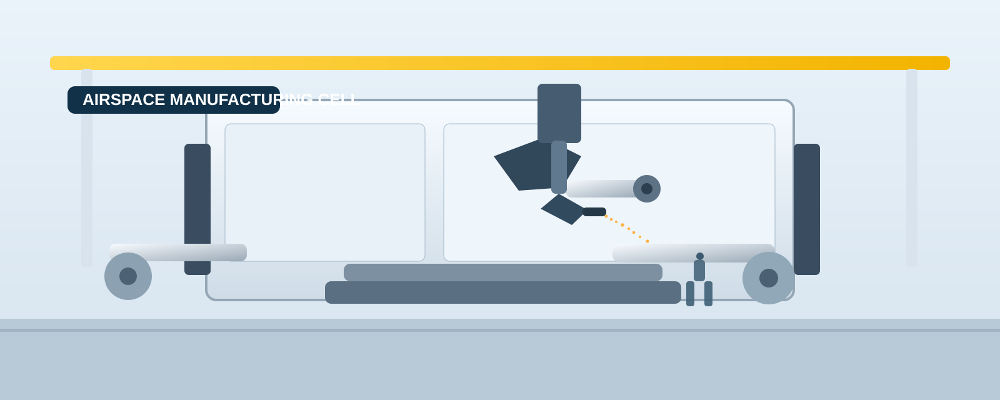

Proveedores
Gestiona contratos, cumplimiento y desempeno de cada socio comercial desde un panel centralizado.
- Evaluacion por cumplimiento
- Alertas de riesgo y capacidad
- Historial de entregas y costos

Operacion conectada
Integra planeacion, compras, inventario y distribucion en una sola plataforma para tomar decisiones mas rapidas y confiables.
Ver indicadores claveGestiona contratos, cumplimiento y desempeno de cada socio comercial desde un panel centralizado.
Mide resultados con metricas claras para anticipar cuellos de botella y optimizar margenes.